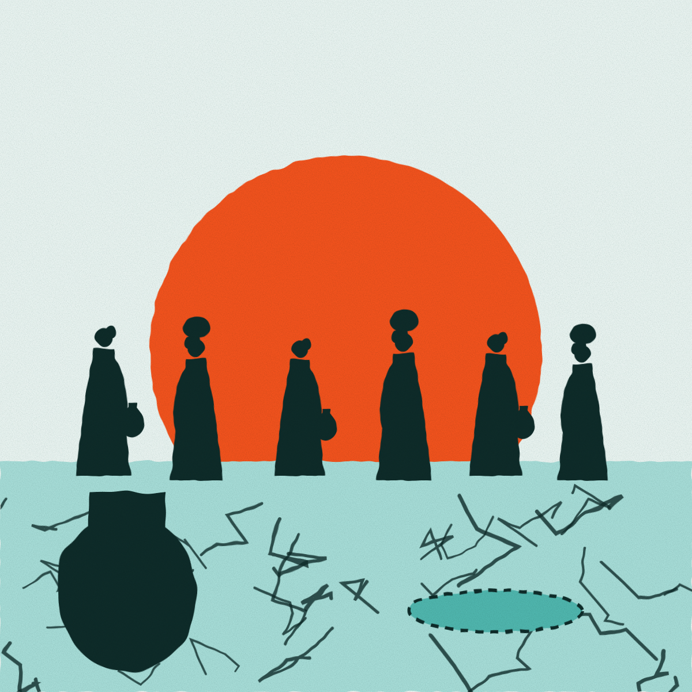
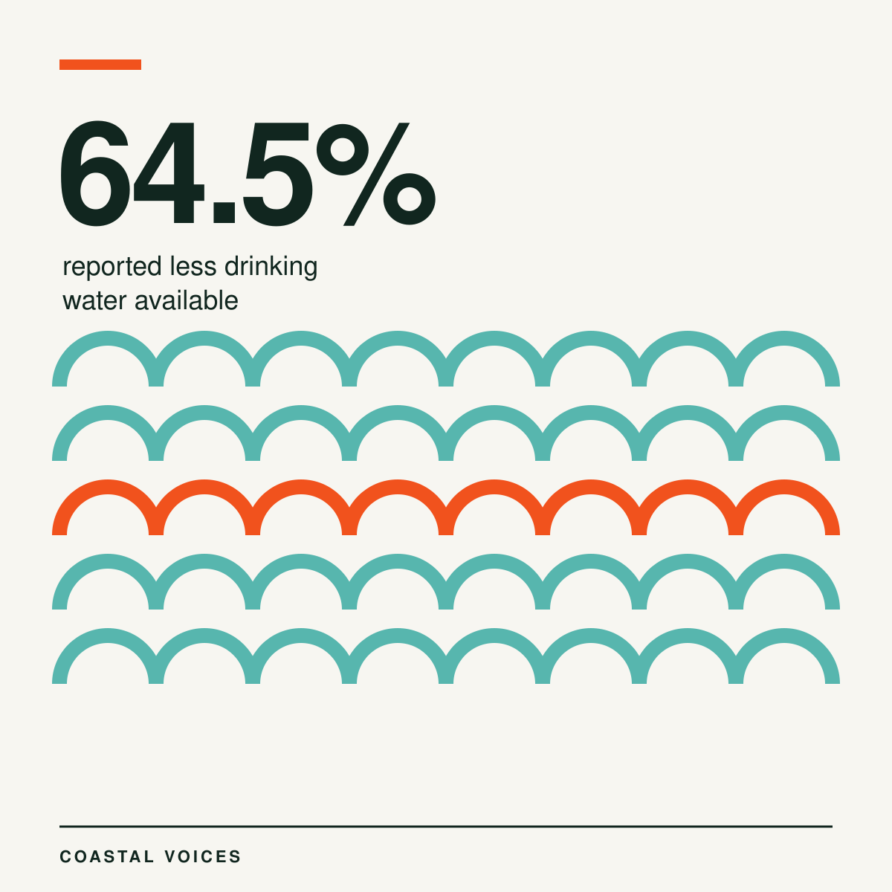
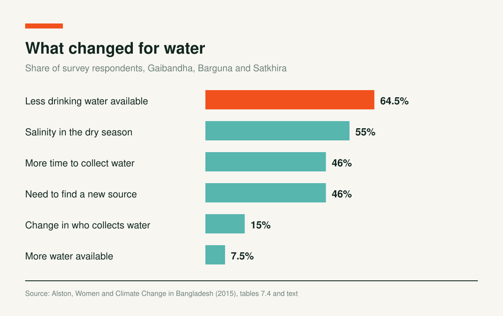
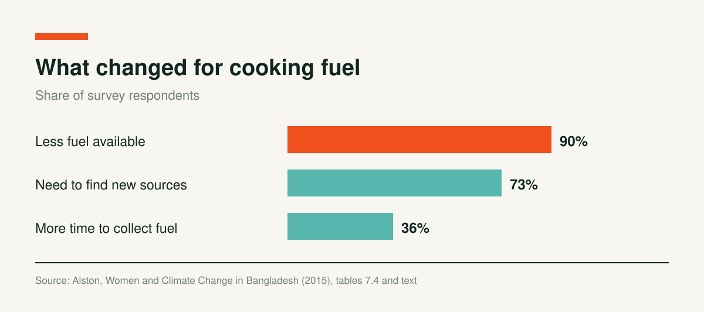

The Longer Walk for Water: Salt, Drought and Women's Days

An NGO informant in Dhaka described what the water shortage looks like in practice: “Women walk several kilometres to get a pitcher full of water.” If the walk is long, she said, families train children to drink less, so they do not have to make the trip twice in a day.
Margaret Alston and her team heard versions of this story in three regions: Gaibandha, Barguna and Satkhira. Their survey puts numbers on it.

Less Water, More Salt, More Time
Across the survey, 64.5% of respondents reported less drinking water available. In Satkhira, 80% did. Another 55% pointed to salinity in the dry season. About 46% said it now takes more time to collect water, and 46% said they have to find a new source.

Women told the researchers they often walk through contaminated water for hours to reach fresh water. Alston links the walk to skin diseases and gynaecological problems. She also cites research that women in saline areas report gynaecological problems and menstrual pain linked to salty water.
The walk is changing who does the work. In Satkhira, contamination and long distances have drawn men into collecting water, and 15% of respondents overall reported a change in who collects it. The longer distances also test traditional limits on women's movement outside the home.
Fuel Follows the Same Pattern
Cooking fuel is scarcer as well. Ninety percent of respondents said less fuel is available, 73% said they must find new sources, and 36% said it takes longer to collect.

One Filter, Fewer Cases of Dysentery
Some villages have seen help. A woman in Satkhira who served as president of a water committee with an NGO described how a water filter was installed on land a villager offered. “Earlier there were diseases like dysentery from drinking pond water,” she said. “Now it has been decreased.”